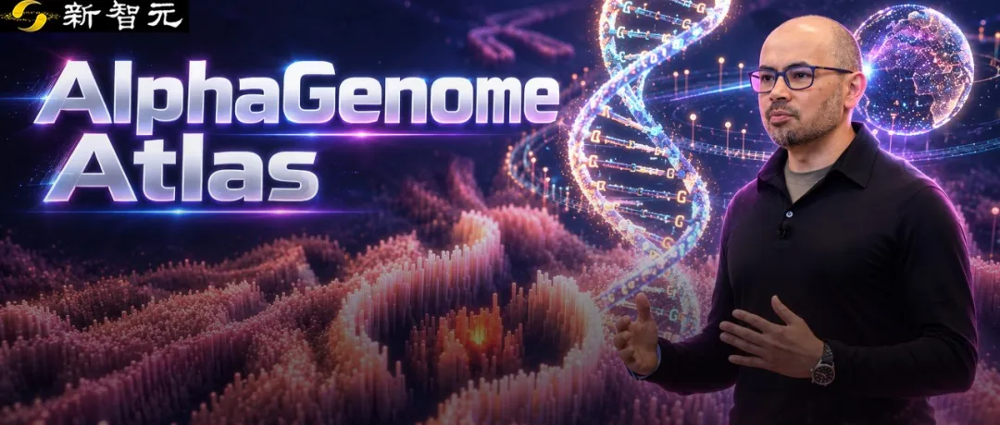
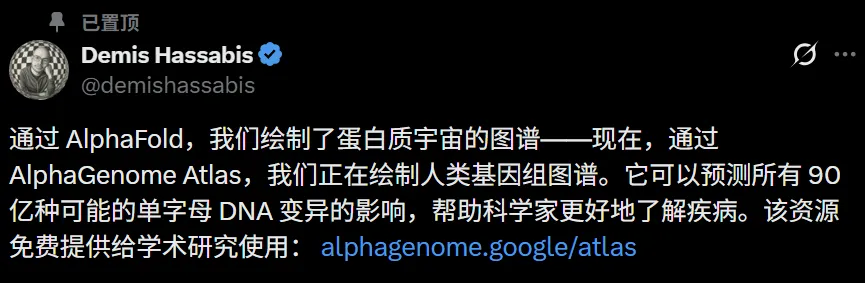
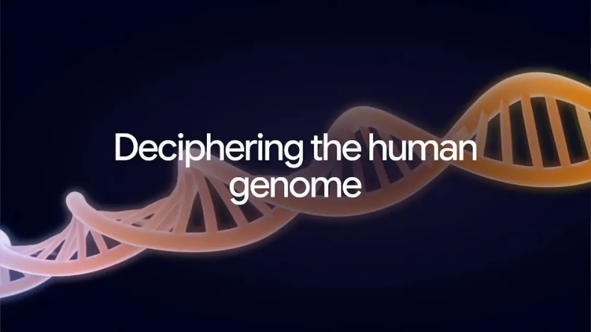
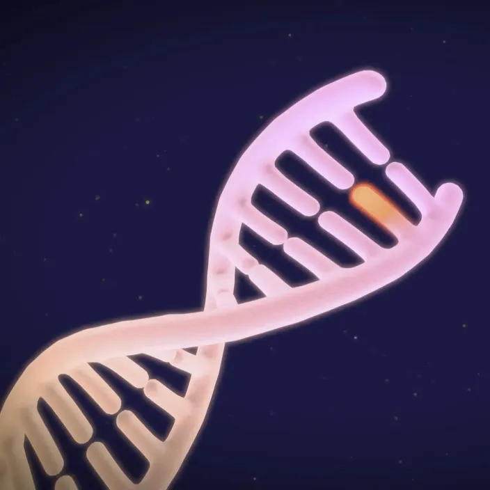
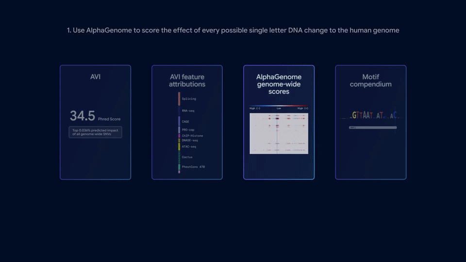
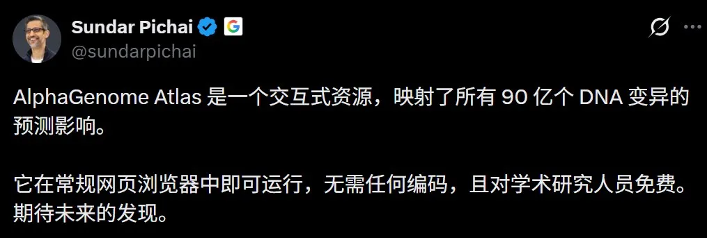
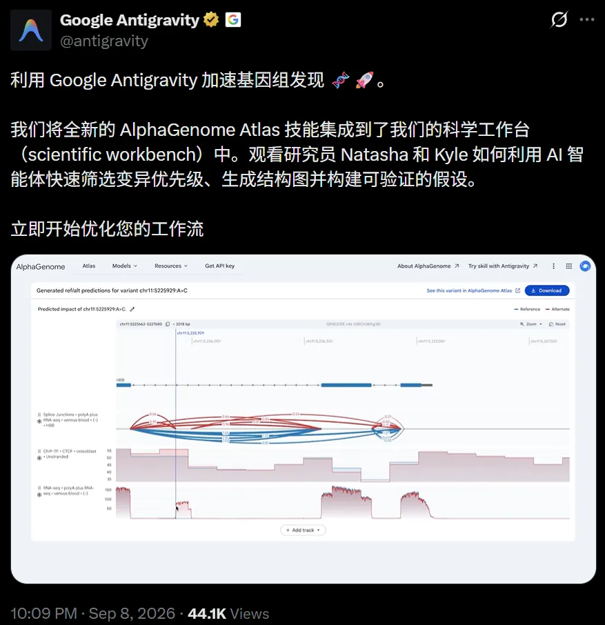

新智元报道
新智元报道

太震撼了！
就在刚刚，谷歌DeepMind正式发布「阿尔法」重磅成果——AlphaGenome Atlas。
这是一个有前沿AI加持、覆盖全基因组的可搜索预测数据库。
它完成了生命科学史上，一项前所未有的工程——
把人类基因组里所有潜在的「单碱基突变」，整整90亿种，全部算了一遍。
这是AlphaFold绘制「蛋白质宇宙」之后，AI对人类生命密码的又一次全局性测绘。
90亿是什么概念？
人类基因组约有30亿个碱基位点，每个位点3种变异，Atlas一个没漏都算完了。
这样要是放在以往，把这90亿种突变搬进实验室，几乎不可能。
更夸张的是，针对每一种突变，它还会给出约27000项预测指标，判断它如何影响基因表达、RNA剪接、染色质开合以及DNA三维空间构象，横跨人类和小鼠的数百种细胞类型。
90亿乘以27000，最终得到是超240万亿个预测数值，全部打包在一起足足有1PB。
AlphaGenome Atlas的体量，是AlphaFold数据库的30倍。
Demis Hassabis忍不住感叹，「AlphaFold绘制了蛋白质宇宙，现在，AlphaGenome Atlas开始绘制人类基因组。」

最关键的是，这个图谱对研究者近乎零门槛：
不用配本地环境，不用写一行代码，打开浏览器输入位点，结果秒出。
从蛋白质结构，到DNA变异的影响，DeepMind又铺开了一张生命地图。


DNA被称为「生命的语言」，由A、T、C、G四种碱基书写而成。
1953年人类看清DNA双螺旋，2003年人类基因组计划完成，花了整整13年和27亿美元，才把30亿个碱基字母全部读出来。
但读出来，完全不等于读懂。
这30亿个字母里，只有区区2%负责编码蛋白质；剩下98%看起来不编码任何东西，实际上却严密控制着每个基因在何时、何种细胞里、以多大强度表达。
绝大多数与疾病和性状相关的变异，恰恰就藏在这98%的非编码区域里。
如果改掉其中一个字母，到底会引发什么后果？

一个碱基的改变，就是一种「单碱基突变」
在人类基因组的数十亿对碱基中，存在大约90亿种潜在的单核苷酸替换。
若在实验室中逐个验证，都是完全不可能完成的任务。
AlphaGenome彻底掀了桌子，一口气读入100万个碱基，用卷积层抓局部模式，用Transformer传递整段序列的长程依赖，直接预测出数千条表观遗传与转录轨道，精度精确到单个碱基。
评估一个变异，只要把突变前后的序列丢进模型各跑一遍比对差异，一秒钟就能出结果。
但即便只要一秒钟，乘以90亿，算完全部依然要耗上285年。
Atlas所做的，就是把这漫长的285年，直接压缩进了一张现成的静态检索表。
90亿种突变，怎么找出最值得研究的那几个？
这一次，AlphaGenome Atlas构建了一套多层次、高解析度的联动解密体系：
底层是原始预测
Atlas针对每一个碱基变异，生成了27000条跨越基因调控关键维度的分子效应预测，涵盖数百种人类及小鼠的细胞类型与组织。
它揭示了突变如何在不同组织、不同发育阶段影响染色质可及性、转录和剪接。
中层是统一度量衡
为了帮科学家一秒筛选出「高危变异」，DeepMind将AlphaGenome（擅长调控机制）与AlphaMissense（擅长预测错义突变致病性）双剑合璧，提炼出了一个直观的单一代谢/致病评分——AVI指标（AlphaGenome Variant Impact）。
分值越高说明有害风险越大，编码区和非编码区用上了同一把尺子。
结果，它攻克了98%的非编码区「暗物质」。这里正是绝大多数人类复杂性状与疾病关联突变藏身之所。

全透明归因拆解
AI不能只是「黑盒报分」。
Atlas还将每个变异的AVI分数解构为可解释的生物学贡献项，精准告诉科学家——
这个突变之所以得分高，到底是因为破坏了RNA剪接，还是干扰了染色质开放度，亦或是改变了基因表达丰度。
顶层是全景词汇表
团队从海量预测中提炼出2601个高频DNA模式，在全基因组标注了2530亿个实例。哪个转录因子在哪种细胞里认哪段序列，一查便知。
这几层数据被彻底纵向打通。研究者从一个变异出发，鼠标点几下，就能一路查清它破坏了哪个调控元件、元件里的核心模体（motif），以及对应的转录因子。
过去需要几个课题组协同数年的工作量，如今被收拢到了几次鼠标点击里。
DeepMind基因组负责人Žiga Avsec透露，为了啃下这1PB数据，团队把整套计算流水线的速度硬生生拉高了80倍。
这套系统的实战威力如何？
在正式发布前，DeepMind 与全球顶尖科研机构的先期合作已经带来了震撼成果。
在罕见病研究中，最让人头疼的情况之一，是已经拿到基因数据，却迟迟找不到解释病情的关键变化。
Broad研究所的Anne O'Donnell-Luria和Laura Covill团队，曾接触过一个从婴儿期就开始癫痫发作的患儿，同时伴随痉挛、发育迟缓和肌张力低下。
但此前的基因分析没能确诊，成了一个久悬不决的未解病例。
这一次，他们把这个患儿筛出的全部候选变异喂给AVI重新排序。
结果，高居第一位的，是9号染色体DNM1基因内含子里的一个G到A的变异。
Atlas甚至还原了DNM1「犯罪现场」：创造了一个错误的剪接位点（RNA拼接指令出错），导致翻译出的蛋白质发生了异常延长。
随后的湿实验完全证实了AI预测的机制，成功侦破了这一导致癫痫性脑病的分子悬案。

Atlas的另一项用途，是帮助研究者分析人群中的罕见变异。
单个罕见变异出现次数少，影响容易淹没在大量无害变化形成的背景噪声里。
埃克塞特大学的Gareth Hawkes，把Atlas用于超过5.4万名英国生物样本库参与者的全基因组数据。
研究按预测的分子效应，将罕见变异分组分析。
据DeepMind介绍，这种方法多发现了22%的非编码遗传关联，并帮助定位影响循环蛋白丰度的调控变异，涉及PLA2G7和细胞氧感知相关基因EGLN1。
在另一项围绕身体质量指数（BMI）的分析中，Hawkes聚焦Atlas预测影响最大的1%非编码变异，识别出19个遗传区域，为后续定向研究缩小了范围。
Atlas还整理了超过2500种反复出现的DNA短序列及其位置。
它们像基因组里的「词」，帮助研究者寻找调控蛋白的结合位置，追查非编码变异打乱了哪些调控环节。
上述新发现都有一个耐人寻味的共同点——
没有一个科研团队在本地机房里从头跑过一遍AlphaGenome，所有的突破，全靠「直接查表」。
这是人类史上第一次，全球任意角落的研究人员，只要打开浏览器，就能看到人类基因组及其变异的完整地图。

以往想要读懂一个非编码突变，往往需要GPU资源、资深的生信工程师，还要耗时调试复杂管线。
如今，这些技术门槛全被这张静态图谱抹平了。
除了网页门户和API，Atlas还作为原生工具技能，接入了Google Antigravity智能体平台。
在此之前，DeepMind已将AlphaGenome、UniProt等30多个科学数据库封装成了Agent技能包。
在官方演示中，研究人员对着AI说一句话，智能体就会自动去查位点、排危险度、画出结构图，并给出可验证的假说链条。

历经23年沉淀，人类终于拿到了这本「生命天书」的解读指南。
AI提前为30亿字符里每一个潜在的错别字、以及可能引发的分子后果做好了标注，交给人间一张完整的勘误表。
回头看DeepMind在生物计算领域的行进路线：
2020年AlphaFold攻克蛋白质三维折叠，2022年AlphaFold数据库向全球开放2亿个蛋白质结构，2023年AlphaMissense完成7100万个蛋白质变异的致病性打分，2025年AlphaGenome读懂非编码调控区。
直到今天，Atlas完成对人类基因组全部单碱基突变可能性的穷举测绘。
短短五年，DeepMind从解析单个蛋白质的物理形态，跨越到了穷尽整个人类基因组的所有单碱基变化。
从「读懂生命」，到「预测生命」。
生命科学的下一个时代，已经开始了。
参考资料：
https://x.com/googledeepmind/status/2097325048109384166
编辑：摩西 桃子